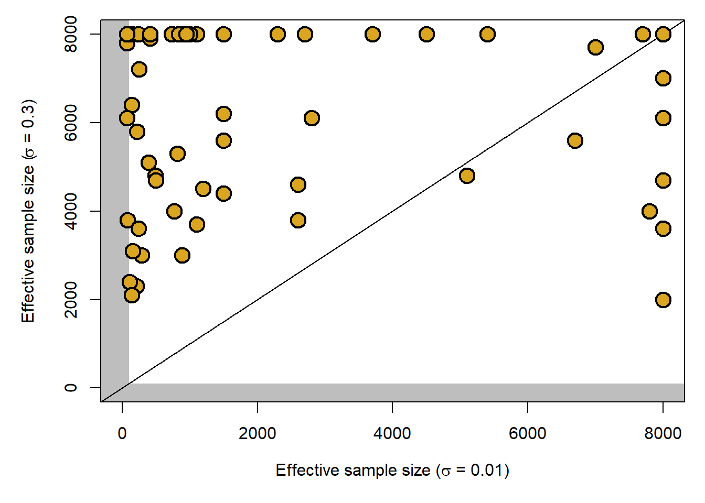
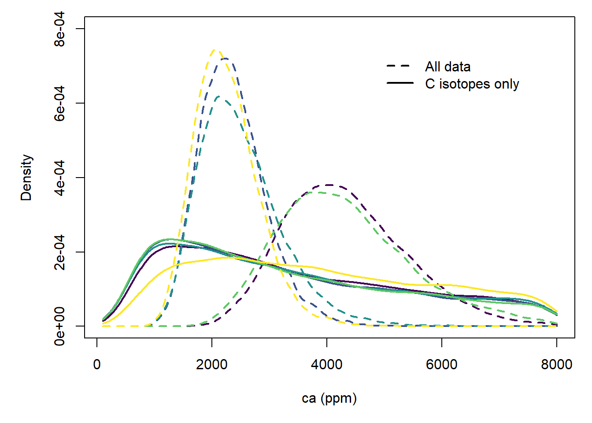

library(R2jags)
library(openxlsx)
library(viridisLite)
source("code/helpers.R")
source("code/models/testModels.R")incompleteData
Setup
Load packages and functions and export model versions for use.
Load and parse data, we’ll just use 5 samples for brevity.
d = read.xlsx("data/stomata-franks_zhang_2024_P1.0.xlsx", sheet = 1, startRow = 3)
data = parseFranks(d[4:8, ], FALSE)Finally, provide a list of parameters to save in output.
parms = c("Pl", "l", "amax.scale", "D", "gc.scale", "ca", "meso.scale",
"Ci0_m", "A0_m", "d13Ca_m", "A", "D13C", "gcop")Control and data quality
Invert the full PSM using the test samples. These tests all use a version of the model that is parameterized in terms of SA and GCL, where the priors on these values are fit to the data from the Beerling and Franks compilation. These are scaled using a fixed GCL/Pl of 0.5 and used to calculate D.
system.time({
control = jags.parallel(data, inits, parms, file.path(tempdir(), "fullFranks.txt"),
n.chains = 4, n.iter = 2e6, n.burnin = 1e4, n.thin = 1e3)
}) user system elapsed
0.08 0.08 306.41 I notice that the reported uncertainty in \(\delta^{13}C_{p}\) values in the template is quite low…0.01 permil. I’m not sure where that comes from, but IMHO it’s not a realistic estimate of the precision with which a measurement of the fossil leaf tissue reflects the \(\delta^{13}C\) of photosynthate produced by the ancient plant. Let’s compare the control result to that obtained using a somewhat more realistic 1 \(\sigma\) value of 0.3 permil for all samples.
data.sd = data
data.sd$d13Cp[, 2] = rep(0.3)
system.time({
realSD = jags.parallel(data.sd, inits, parms, file.path(tempdir(), "fullFranks.txt"),
n.chains = 4, n.iter = 2e6, n.burnin = 1e4, n.thin = 1e3)
}) user system elapsed
0.17 0.02 326.09 First, the posterior distributions are better sampled in this case:
par(mar = c(5, 5, 1, 1))
plot(0, 0, type = "n", xlim = c(0, 8000), ylim = c(0, 8000),
xlab = expression("Effective sample size ("*sigma*" = 0.01)"),
ylab = expression("Effective sample size ("*sigma*" = 0.3)"))
rect(par("usr")[1], par("usr")[3], 100,par("usr")[4], col = "grey", lty = 0)
rect(par("usr")[1], par("usr")[3], par("usr")[2], 100, col = "grey", lty = 0)
box()
abline(0, 1)
points(control$BUGSoutput$summary[, "n.eff"], realSD$BUGSoutput$summary[, "n.eff"],
pch = 21, bg = "goldenrod", cex = 2, lwd = 2)
I’ve seen this before…if the data are overly prescribed it can make it more challenging for the MCMC algorithm to fully explore the parameter space.
The grey bands in the plot above are just for reference and show effective samples sizes < 100, for which we’d seriously start thinking about increasing the length of the chains. I’ve bumped up the iterations quite a bit so that both cases are reasonably well sampled, but you can see that we could decrease the chain length substantially and still get good sampling using the ‘real’ standard deviation values. In contrast we are marginal on some parameters using the original value of \(\sigma\).
More to the point, though, here is a comparison between the posterior estimates of ca:
dens.control = apply(control$BUGSoutput$sims.list$ca, 2, density, from = 100, to = 8000)
dens.realSD = apply(realSD$BUGSoutput$sims.list$ca, 2, density, from = 100, to = 8000)
par(mar = c(5, 5, 1, 1))
plot(0, 0, type = "n", xlim = c(100, 8000), ylim = c(0, 8e-4), xlab = "ca (ppm)",
ylab = "Density")
cols = viridis(5)
for(i in seq_along(dens.control)){
lines(dens.control[[i]], lwd = 2, col = cols[i], lty = 2)
lines(dens.realSD[[i]], lwd = 2, col = cols[i])
}
legend(par("usr")[1] + 0.9 * diff(par("usr")[1:2]), par("usr")[3] + 0.9 * diff(par("usr")[3:4]),
legend = c(0.01, 0.3), lty = c(2, 1), lwd = 2, xjust = 1,
title = expression(sigma*delta^{13}*"C"[p]), bty = "n")A few nuances aside (and those most likely due to the poorer sampling for some model parameters in the cases with lower \(\sigma\)) we get the same answer, and no perceptible broadening of the posterior distributions. My take-home is that it’s OK to use a more realistic estimate of the uncertainty on this parameter…at the levels we’re talking about here this is not what is dominating the dispersion in the ca posterior estimates.
Stomatal density
To represent the case where we have data only on stomatal density, let’s set the \(\delta^{13}C_p\) values to some generic distribution. I’ll use a fixed mean value for all samples that’s 19 permil less than the mean estimate for \(\delta^{13}C_a\), and apply a 1 \(\sigma\) value of 4 per mil (we could pick a different value…probably work looking at various compilations for C3 plants). We’ll run this using a version of the model that does not consider the GCL and GCW data, and I’ll keep the same number of posterior samples so we can compare apples to apples.
data.stomata = data
data.stomata$d13Cp[, 1] = data.stomata$d13Ca[, 1] - 19
data.stomata$d13Cp[, 2] = rep(4)
## Drop GCW and GCL
data.stomata = data.stomata[names(data.stomata) != "GCLab"]
data.stomata = data.stomata[names(data.stomata) != "GCWab"]
system.time({
stomata = jags.parallel(data.stomata, inits, parms, file.path(tempdir(), "DonlyFranks.txt"),
n.chains = 4, n.iter = 2e6, n.burnin = 1e4, n.thin = 1e3)
}) user system elapsed
0.25 0.00 301.92 I won’t show it, but the posterior is very well sampled here. Let’s compare ca with what we got using the ‘real’ standard deviation values above.
dens.stomata = apply(stomata$BUGSoutput$sims.list$ca, 2, density, from = 100, to = 8000)
par(mar = c(5, 5, 1, 1))
plot(0, 0, type = "n", xlim = c(100, 8000), ylim = c(0, 8e-4), xlab = "ca (ppm)",
ylab = "Density")
cols = viridis(5)
for(i in seq_along(dens.realSD)){
lines(dens.realSD[[i]], lwd = 2, col = cols[i], lty = 2)
lines(dens.stomata[[i]], lwd = 2, col = cols[i])
}
legend(par("usr")[1] + 0.9 * diff(par("usr")[1:2]), par("usr")[3] + 0.9 * diff(par("usr")[3:4]),
legend = c("All data", "D only"), lty = c(2, 1), lwd = 2, xjust = 1, bty = "n")Without any carbon isotope data to constrain the gas exchange, and without constraints on the other morphology parameters, we’re basically sampling all possible parameter space, and end up with little to no information in our posterior. Given the relatively low D values for these samples the solution space emphasizes relatively high ca values, which make it easier to get to middle-of-the-road carbon isotope discrimination, but most of the information and are left with no distinction between samples.
\(\delta^{13}C_p\)
Finally, let’s look at a case where we only have a carbon isotope measurement for the plant (or perhaps dispersed organic carbon…) and no morphological information. I’m going to artificially change one of the \(\delta^{13}C_p\) values to a pretty low value (equivalent to a \(\Delta\) value of 23 per mil) for demonstration purposes.
data.d13C = data.sd
## Big delta values in the data
data.d13C$d13Ca - data.d13C$d13Cp d13Ca ed13Ca
4 20.75 0.3
5 19.25 0.3
6 19.42 0.3
7 19.60 0.3
8 18.85 0.3data.d13C$d13Cp[5, 1] = data.d13C$d13Ca - 23Warning in `[<-.data.frame`(`*tmp*`, 5, 1, value = structure(list(d13Cp =
c(-26.25, : replacement element 1 has 5 rows to replace 1 rowsWarning in `[<-.data.frame`(`*tmp*`, 5, 1, value = structure(list(d13Cp =
c(-26.25, : replacement element 2 has 5 rows to replace 1 rowsWarning in `[<-.data.frame`(`*tmp*`, 5, 1, value = structure(list(d13Cp =
c(-26.25, : provided 2 variables to replace 1 variables## Drop all morphological measurements
data.d13C = data.d13C[names(data.d13C) != "Dab"]
data.d13C = data.d13C[names(data.d13C) != "GCLab"]
data.d13C = data.d13C[names(data.d13C) != "GCWab"]
system.time({
d13C = jags.parallel(data.d13C, inits, parms, file.path(tempdir(), "d13ConlyFranks.txt"),
n.chains = 4, n.iter = 2e6, n.burnin = 1e4, n.thin = 1e3)
}) user system elapsed
0.17 0.03 267.85 Also very good sampling of the posterior here.
dens.d13C = apply(d13C$BUGSoutput$sims.list$ca, 2, density, from = 100, to = 8000)
par(mar = c(5, 5, 1, 1))
plot(0, 0, type = "n", xlim = c(100, 8000), ylim = c(0, 8e-4), xlab = "ca (ppm)",
ylab = "Density")
cols = viridis(5)
for(i in seq_along(dens.realSD)){
lines(dens.realSD[[i]], lwd = 2, col = cols[i], lty = 2)
lines(dens.d13C[[i]], lwd = 2, col = cols[i])
}
legend(par("usr")[1] + 0.9 * diff(par("usr")[1:2]), par("usr")[3] + 0.9 * diff(par("usr")[3:4]),
legend = c("All data", "C isotopes only"), lty = c(2, 1), lwd = 2, xjust = 1, bty = "n")
Again, very broad posteriors here and relatively little differentiation between the samples. The mode in the ca posterior is shifted to fairly low values, in the 1000 - 1500 ppm range. This is probably because these samples are pretty ‘normal’ when it comes to their carbon isotope discrimination (19 - 21 per mil), and without knowing that they have unusually low D we are sampling across the full range of possibilities and there is an abundance of solution space at relatively low ca that works with the carbon isotope data. You can see that the posterior is shifted toward higher values, however, for samples with higher discrimination, including the first one in the data set (purple), which has a somewhat higher \(\Delta\), and the one that I artificially modified to have \(\Delta = 23\) permil (yellow). So there is a dependence here, and with \(\delta^{13}C_p\) corresponding to higher (or lower) values of \(\Delta\) exploring the same leaf geometry space will produce posteriors shifted toward higher (or lower, respectivley) ca.